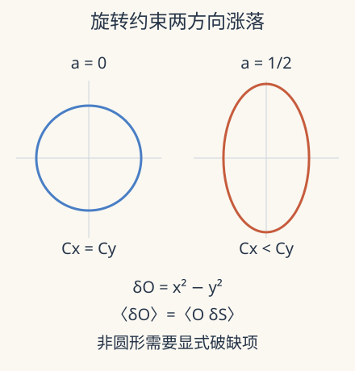

本页目录
现代场论方法 I · 对称性与关联函数：从变量代换得到 Ward 恒等式
先修：量子对称性、路径积分与密度矩阵、场论路径积分。这是现代场论四讲的起点，随后进入 bootstrap、散射振幅与广义对称性。本讲高斯模型只需积分与求导；局域场论部分还需分布和正则化。
没有算出完整路径积分，能不能先排除一个错误答案？
1. 先问关联函数记住了什么
单点平均可能因对称性为零，而两点关联仍然非零。关联函数 \(\langle\phi(x)\phi(y)\rangle\) 记录两个位置的涨落如何一起变化；在量子场论中还必须说明时间序、态与边界条件。它不是自动等于“一个粒子从这里飞到那里”的概率。
先把无限多个场自由度缩成两个无量纲实变量 \(x,y\)，令作用量与含源配分函数为
这里 \(m>0\) 是高斯约束的强度参数，\(|a|<1\) 保证两个方向都可积；它不是直接带物理质量单位的粒子质量。\(a=0\) 时概率权重旋转不变，\(a\ne0\) 时两个方向被明确区别。
完成平方，两个积分分别变成平移后的高斯积分，因此
取 \(W=\log[Z(J)/Z(0)]\)，对源求导便得到连通关联。零源时 \(\langle x\rangle=\langle y\rangle=0\)，而
源不是又一个随意参数：它是把可测响应与关联组织成同一个生成函数的工具。
2. 一个变量代换可以约束全部积分
考虑微小旋转 \(\delta x=-y\,\delta\theta\)、\(\delta y=x\,\delta\theta\)。其 Jacobian 为 1。只要积分边界和收敛允许变量代换，积分的数值不能因重新命名变量而改变。对任意可积的 \(O(x,y)\)，一阶项给
此处 \(\delta\) 已除以 \(\delta\theta\)。在 \(a=0\) 时 \(\delta S=0\)，于是 \(\langle\delta O\rangle=0\)。选 \(O=xy\)，得到 \(\delta O=x^2-y^2\)，所以 \(C_x=C_y\)。我们没有再做积分，就知道任何给出不同方差的“对称解”出了问题。
在 \(a\ne0\) 时，\(\delta S=-2am^2xy\)，同一个恒等式改为
最后一步使用本例两个方向高斯独立。把前面的显式结果代入，两侧都等于 \(-2a/[m^2(1-a^2)]\)。对称性被显式破坏，并不意味着变量代换恒等式消失；它增加了明确的破缺项。

3. 用残差检验对称性，而不是只画对称图
先预测：增大 \(a>0\) 会压低哪个方向的涨落？若 \(C_x\ne C_y\)，这是程序错误还是模型预期？
调节约束强度和各向异性，比较两方向关联以及包含显式破缺项的 Ward 残差。
默认静态核对：\(m=1,a=0.5\) 时 \(C_x=2/3,C_y=2\)，差为 \(-4/3\)。破缺项 \(-2am^2C_xC_y\) 也为 \(-4/3\)；完整残差 \(C_x-C_y+2am^2C_xC_y=0\)。错误地丢掉破缺项会把完全正确的数据误判成违规。\(a\to1\) 时 \(y\) 方向约束消失、积分发散，实验不允许到达端点。
这个零维模型没有空间、传播或紫外发散。它检验的是源求导和变量代换的代数关系，尚未证明某个场论存在，也不能从椭圆猜出自发破缺。
为什么使用 \(W=\log Z\) 而不是只对 \(Z\) 求导？在非零 \(J_x\) 下，本例有 \(\langle x\rangle=C_xJ_x\)，\(\langle x^2\rangle=C_x+C_x^2J_x^2\)。原始二阶矩包含由非零平均产生的平方项；\(\partial_{J_x}^2W=C_x\) 则自动减去了它，留下连通涨落。若研究者把原始二阶矩随源增大误称为“涨落增强”，就会混淆平均位移与真实方差。回到场论，相同的减法用于区分独立传播的乘积与真正相连的关联贡献。
4. 将旋转参数放到每一个时空点
在场论中，把全局常数参数暂时改成测试函数 \(\alpha(x)\)，作用量变分通常包含 \(\int d^dx\,\partial_\mu\alpha\,j^\mu\)。分部积分后，变量代换把电流散度与算符插入的变分联系起来。采用这个电流符号约定，欧氏 Ward 恒等式为
等式是分布意义的：在插入点之外电流守恒，不意味着整条关联函数的散度处处为零。接触项保证电荷确实能作用在算符上；数值离散、边界通量和源也可能添加相应项。
若正则化后的测度不能同时保持拟议对称性，变量代换还可能产生反常项。反常不同于显式在作用量里加一个 \(a\)，也不同于态选了一个方向的自发破缺。三种情况会带来不同的约束，研究论文应说明它讨论哪一种。
5. 对称性固定形状，还留下动力学数据
对于欧氏共形场论中的相同标量初级算符 \(O\)，平移、旋转和尺度变换把两点函数限制成
\(\Delta_O\) 是缩放维数，\(C_O\) 依赖归一化。尺度协变解释幂律，但没有单独算出相互作用理论的 \(\Delta_O\)。四点函数还有无量纲交比的自由函数，对称性无法把它完全消掉；这正是下一讲引入 OPE 与 crossing 的理由。
研究中的常见错误是把允许形式当成完整解。例如只写对称的四点函数，并未证明它有正的谱权重或满足各个 OPE 通道的一致性。相反，Ward 恒等式往往是复杂计算的廉价但强力检查：一个近似若破坏了必要恒等式，可能损坏守恒响应，即使能量看起来准确。
6. 研究窗口：从约束关联到全息计算
Zhou 于 2026-09-02 提交的 Pre-Strings 讲义以全息关联函数为对象，具体展示四维 \(\mathcal N=4\) 超 Yang–Mills 在经典 IIB 超引力对偶区间的四点计算，并讨论 Mellin 方法及缺陷扩展。这是一份理论讲义预印本，不是普通材料实验，也不是对任意耦合、任意场论的完整求解。
它提供的研究方向是把对称性与不同极限的相容性联合使用，减少逐图积分的工作量。实际阅读仍要逐项标出大 \(N\)、强耦合、树级或圈级，以及是否有超对称保护。把这些近似层次删掉，会让一个特定区域的精确表达看起来像普遍恒等式。
7. 两道迁移题
题 1。 保持 \(a=0\)，将 \(m\) 加倍。方差和标准差各怎样变？
核对题 1
方差 \(1/m^2\) 变为四分之一，标准差变为二分之一。二者仍相等；整体约束变强不会破坏旋转对称性。
题 2。 在场论的两个算符插入点外验证电流散度为零，是否已经验证完整 Ward 恒等式？
核对题 2
没有。还必须验证插入点的接触项及边界条件。积分包围一个带电算符时，电流通量应给出对应的对称变分；漏掉接触项就无法得到这个作用。
速查与原始阅读
源的导数生成关联，变量代换给 Ward 恒等式。高斯各向异性模型满足 \(C_x-C_y=-2am^2C_xC_y\)；场论中还要保留接触项、测度与边界。
- Simmons-Duffin：共形 Ward 恒等式、反射正性与 OPE，2016-02-25 首发，作者课程讲义。
- Zhou：Pre-Strings 全息关联函数与解析 bootstrap，2026-09-02 首发的理论讲义预印本；本讲采用的范围见正文，已核查全文。
- Gaiotto 等：广义全局对称性，2014-12-16 首稿，2015-01-10 修订；将对称约束推广到延展算符，留待第四讲。
来源核查：2026-09-08。下一讲：共形 bootstrap。
继续共形块、正性与排除证书，从后裔范数算真正的共形块，并用解析不等式覆盖一维允许谱的整个半轴。